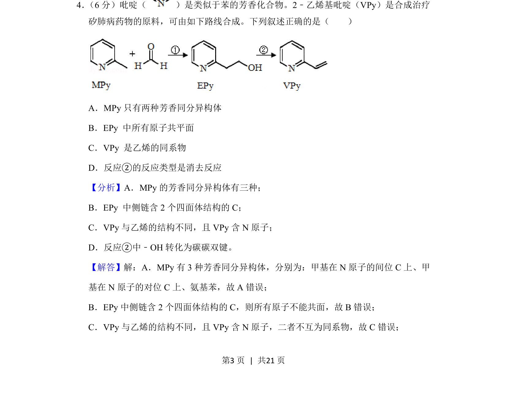
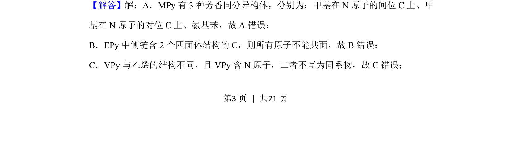
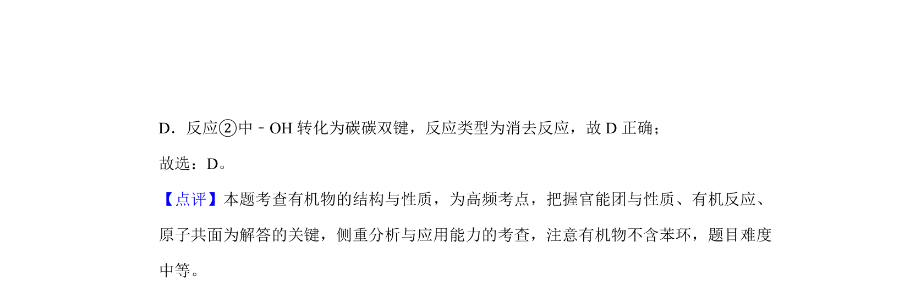

考点：同分异构体 原子共面 同系物 消去反应

该题考查有机化学中芳香同分异构体、原子共面、同系物及反应类型的判断。


📄 原 PDF 第 3 页：
素材/真题/吉林/2008-2024·（吉林）化学高考真题/2020年高考化学试卷（新课标Ⅱ）（解析卷）.pdf
4． （6分）吡啶（ ）是类似于苯的芳香化合物。2﹣乙烯基吡啶（VPy）是合成治疗 矽肺病药物的原料，可由如下路线合成。下列叙述正确的是（ ） A．MPy只有两种芳香同分异构体 B．EPy 中所有原子共平面 C．VPy 是乙烯的同系物 D．反应②的反应类型是消去反应
【分析】A．MPy的芳香同分异构体有三种； B．EPy 中侧链含2个四面体结构的C； C．VPy与乙烯的结构不同，且VPy含N原子； D．反应②中﹣OH转化为碳碳双键。 【解答】解：A．MPy有3种芳香同分异构体，分别为：甲基在N原子的间位C上、甲 基在N原子的对位C上、氨基苯，故A错误； B．EPy中侧链含2个四面体结构的C，则所有原子不能共面，故B错误； C．VPy与乙烯的结构不同，且VPy含N原子，二者不互为同系物，故C错误；